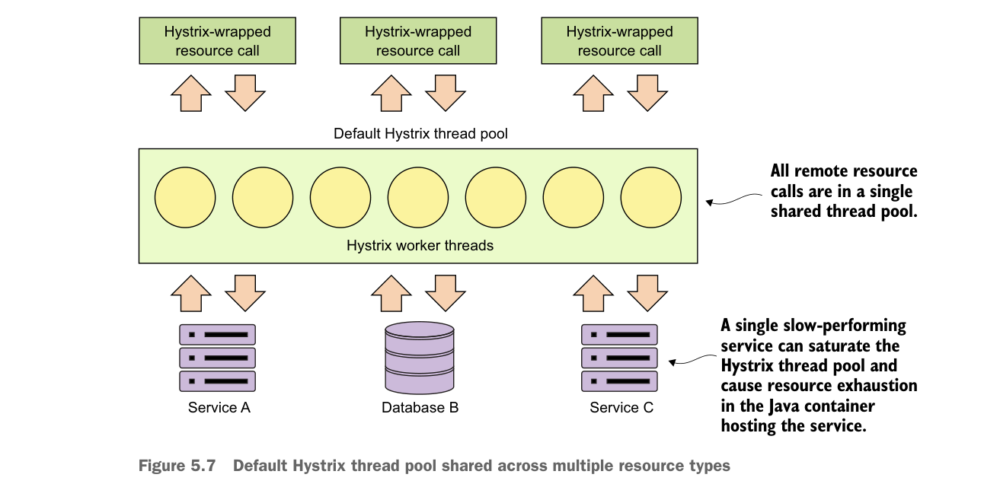

5.7 Triển khai mẫu bulkhead
Trong một ứng dụng dựa trên microservice, bạn thường cần gọi nhiều microservice để hoàn thành một tác vụ cụ thể. Nếu không dùng mẫu bulkhead, hành vi mặc định cho các lời gọi này là chúng được thực thi bằng cùng các thread dành riêng để xử lý yêu cầu cho toàn bộ Java container. Với khối lượng lớn, sự cố hiệu năng ở một dịch vụ trong số nhiều dịch vụ có thể khiến tất cả thread của Java container bị dùng hết và chờ xử lý công việc, trong khi các yêu cầu mới bị tắc nghẽn. Java container cuối cùng sẽ sập. Mẫu bulkhead tách các lời gọi tài nguyên từ xa vào thread pool riêng để một dịch vụ hoạt động sai lệch có thể được cô lập và không làm sập container.
Hystrix dùng thread pool để ủy quyền tất cả yêu cầu cho các dịch vụ từ xa. Theo mặc định, tất cả lệnh Hystrix sẽ dùng chung thread pool để xử lý yêu cầu. Thread pool này có 10 thread để xử lý các lời gọi dịch vụ từ xa và những lời gọi dịch vụ từ xa đó có thể là bất cứ thứ gì, bao gồm lời gọi dịch vụ REST, lời gọi cơ sở dữ liệu, v.v. Hình 5.7 minh họa điều này.

Thread pool Hystrix mặc định được chia sẻ giữa nhiều loại tài nguyên
Mô hình này hoạt động tốt khi bạn chỉ truy cập một số ít tài nguyên từ xa trong ứng dụng và khối lượng lời gọi của từng dịch vụ được phân bổ tương đối đều. Vấn đề là nếu bạn có các dịch vụ có khối lượng lớn hơn nhiều hoặc thời gian hoàn thành lâu hơn các dịch vụ khác, bạn có thể dẫn tới cạn kiệt thread trong thread pool Hystrix vì một dịch vụ chiếm hết thread trong thread pool mặc định.